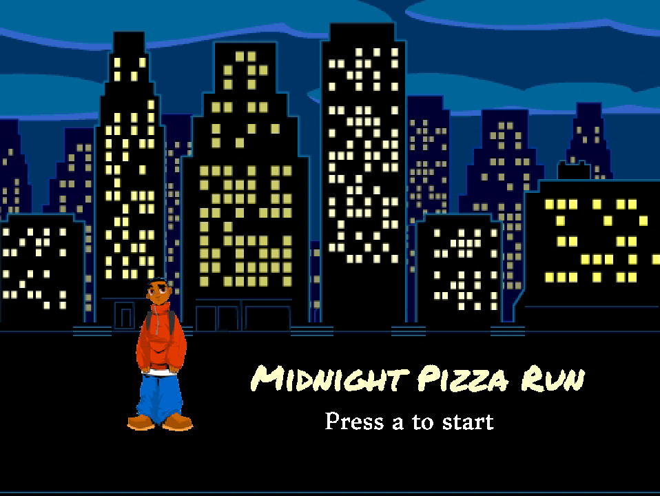
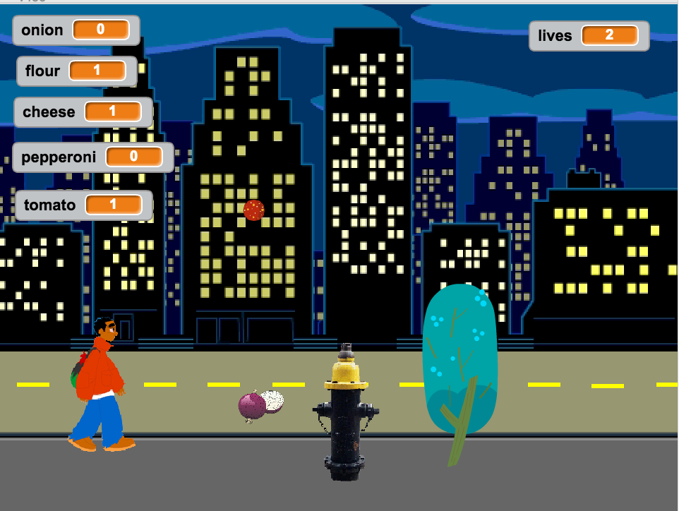
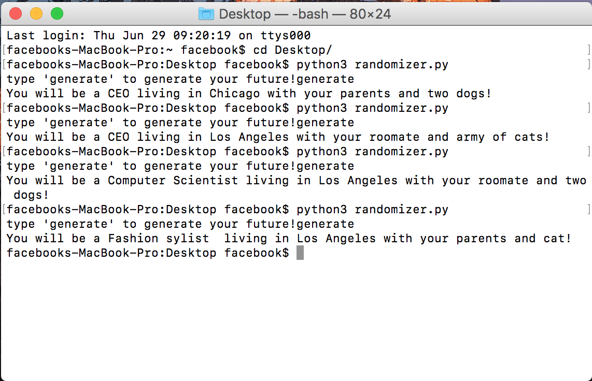
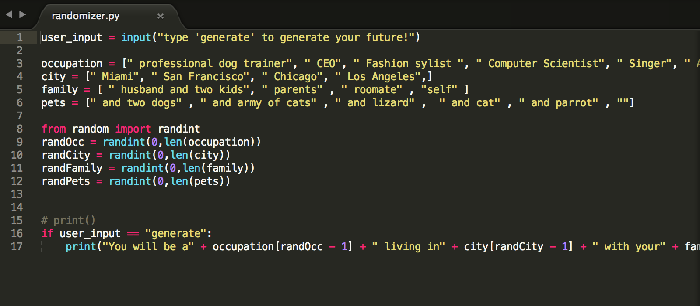
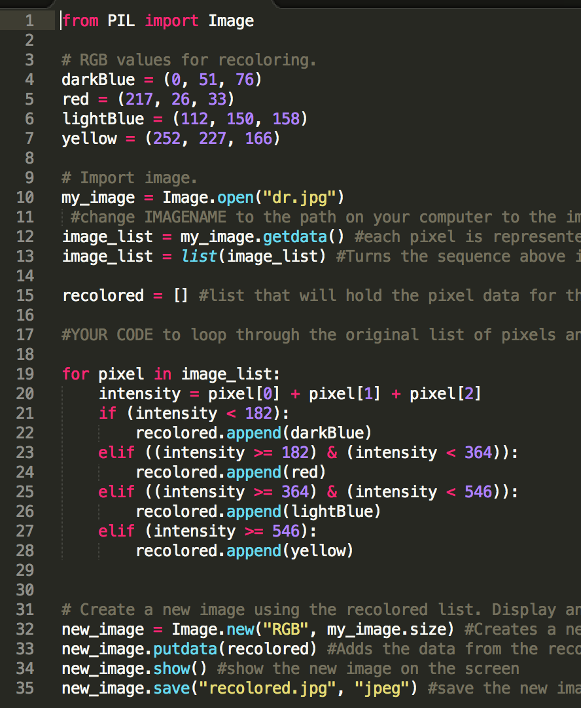

My First Girls Who Code Project


This project was really fun to work on although we ran
into many problems along the way.We were very happy with the
final product. The objective was to collect ingredients and
jump over obstacles along the way - kind of like the dinosaur
game, but pizza themed (:
The project can be found here.
Future Generator: Randomizers and Lists


We reviewed randomizers and arrays. I used both to create a program that randomly chooses data from different arrays that contain different outcomes of your possible future, making many different combinations.
Obamicon


In this lab we ran rgb omething i forgot how this lab worked